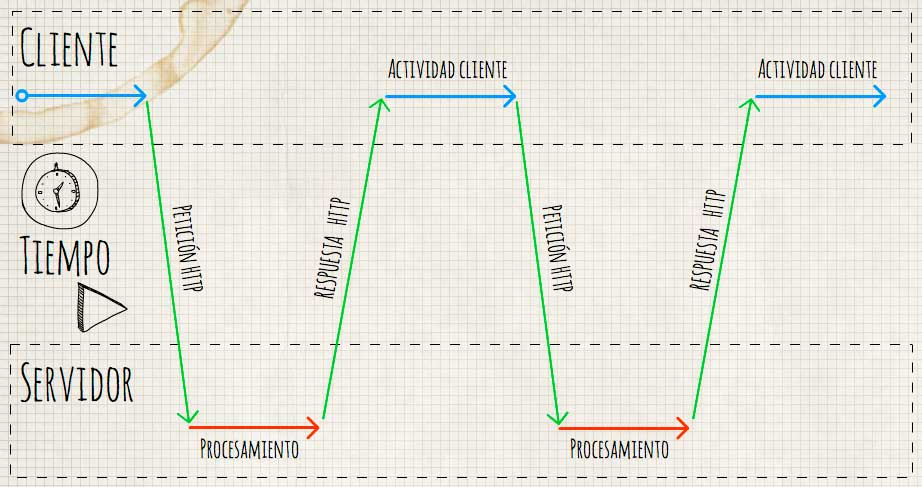
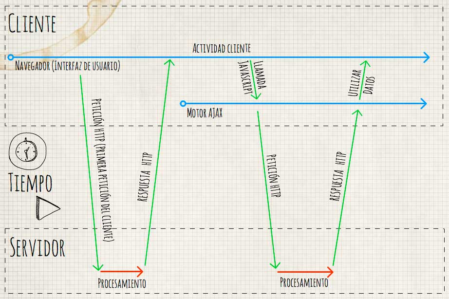
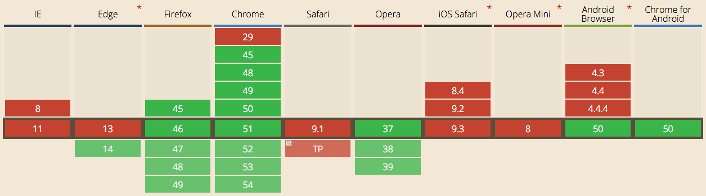

Antes de nada lo que tenemos que tener claro es
¿AJAX?, Estás siglas significan Asynchronous JavaScript
And XML
(JavaScript asíncrono y XML) Como ya veíamos en el artículo ¿Cómo funciona el protocolo HTTP?, cada vez que queremos actualizar el contenido de nuestro
sitio web tendríamos que recargar nuestro página, con está
tecnología conseguimos es evitar esas odiosas recargas de
pantalla, con las que el usuario pierde la iteración con la
aplicación.

Ejemplo de aplicación web sincrona
 Ejemplo de aplicación web asíncrona, una aplicación de este tipo podría ser un chat.
¿Qué tecnologías usa AJAX?
Ajax hace uso de cuatro tecnologías HTML y CSS -
Para maquetar la información recibida.
DOM (Document Object Model) - Estructura jerárquica
que modela una página web, es usado para eliminar, modificar o
agregar nuevos elementos. XMLHttpRequest - Objeto
que nos permite realizar peticiones HTTP o HTTPS
XML, JSON - Codificación utilizada para transferir
los datos. Ahora que ya sabemos un poco el funcionamiento de
AJAX.
¿Cómo se realiza una petición AJAX?
Como hemos visto en
artículos anteriores
en el blog cada vez que realizamos una petición a un servidor
tenemos que indicarle el método (GET, POST, ...) y a mayores
agregar cabeceras al objeto con la
propiedad setRequestHeader. En la
API de XMLHttpRequest
podemos ver todos las propiedades del objeto.
var request = new XMLHttpRequest();
request.open('POST', '/my/url', true);
request.setRequestHeader('Content-Type', 'application/x-www-form-urlencoded; charset=UTF-8');
request.send(data);
Ejemplo de petición AJAX POST que no espera ninguna respuesta.
var request = new XMLHttpRequest();
request.open('GET', '/my/url', true);
request.onload = function() {
if (request.status >= 200 && request.status < 400) {
// Éxito!
var resp = request.responseText;
} else {
// Conectamos con el servidor de destino, pero devuelve un error
}
};
request.onerror = function() {
// Hubo algun error en la conexión con el servidor
};
request.send();
Ejemplo de petición AJAX GET que espera respuesta.
Alternativa a XMLHttpRequest
Hasta ahora solo conocíamos XMLHttpRequest al que llamamos AJAX, pero existe una nueva forma de comunicarnos con el servidor que es FETCH. Antes de nada hay que aclarar que fetch aún no está implementado por todos los navegadores por lo que su uso es limitado, como podemos ver en esta gráfica de Can I use.

Aunque siempre podemos usar un Polyfill, en este caso el equipo de Github ha desarrollado uno, que podemos ver desde aquí.
¿Qué nos ofrece Fetch?
Facilidad de uso - Como veíamos en los objetos de arriba crear objetos y configurar los callbacks puede ser un poco tedioso, podemos ver que es muy sencillo.
fetch('/my/url')
.then(function(response) {
var resp = response.text();
})
En este ejemplo estoy recibiendo la respuesta como texto pero lo podríamos obtener como arrayBuffer(), blob(), json(), text(), formData(). Por defecto fetch usa el método GET, podemos ver todas estas opciones en la API. *Uso de promesas - *Totalmente enfocado al uso de las mismas, si quieres saber más acerca de las promesas, puedes revisar mi otro artículo .
AJAX con librerías externas
Como hemos visto Fetch hace el uso de llamadas asíncronas muy sencillo, XMLHttpRequest puede llegar a ser un algo engorroso, por ello algunos desolladores han creado librerías externas que nos facilitan su uso, en este caso vamos a hablar de JQuery, y comprar con los ejemplos que hemos visto.
$.ajax({
type: 'POST',
url: '/my/url',
data: data
});
Ejemplo de petición AJAX POST usando JQuery que no espera ninguna respuesta.
$.ajax({
type: 'GET',
url: '/my/url',
success: function(resp) {
},
error: function() {
}
});
Ejemplo de petición AJAX GET usando JQuery que espera respuesta.